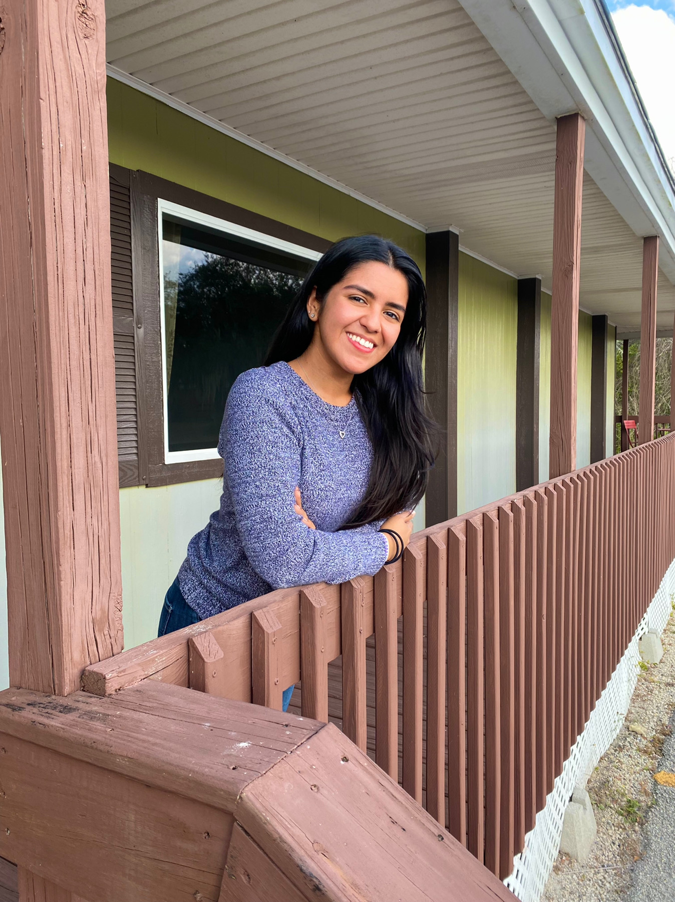

Hello, my name is Katryn Munoz. I am student at Broward Collage. I am studying to be a web developer.
I have been learning coding since my senior year of high school. I have an associates degree in graphic design and I am studying for my
bachelors degree in computer science. I have covered skills like, JavaScript, CSS, and C++ and plan on covering more as I continue.
I am born and raised in South Florida. My family is originally from Colombia.
I am the first generation in the living in the US.
I like to spend time with family and do adventurous things.